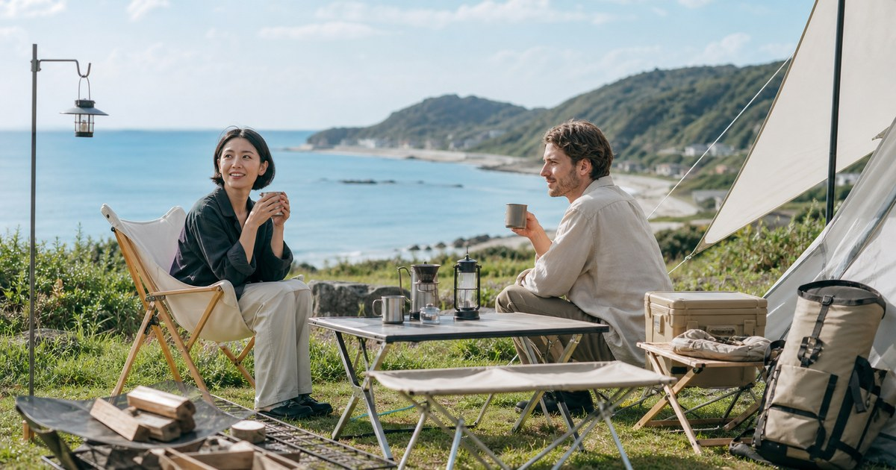

日系露營風格怎麼入門：Snow Peak 與實用小物的選購順序
日系露營風格不是把所有裝備都換成高價品牌，而是先建立桌面、坐感、收納與燈光的秩序。從 Snow Peak 的核心單品到實用小物，這篇整理一套更不容易買錯的入門順序。

先把風格拆成使用秩序，而不是只看顏色
很多人一想到日系露營，會先想到米色天幕、木色桌板、鈦杯和整齊排列的杯盤。但只追求同色系，很容易買到一堆好看的小物，真正到營地卻發現桌面不夠、椅子不好坐、收納箱太難搬。
更好的開始，是把風格拆成幾個使用任務：坐在哪裡、東西放哪裡、煮好後怎麼端、天黑後怎麼看得清楚。Snow Peak 可以作為核心秩序的升級基準，campingflying、未來戶外城市、ANPING 與江大露營裝備則適合補齊小工具與收納。
- 先確認高頻動作：坐下、拿杯子、放餐具、收垃圾、夜間照明。
- 先買會影響動線的大件，再買只影響照片的小物。
- 同色系可以加分，但尺寸、重量、收納方式更容易決定使用率。
第一層先處理坐感與桌面高度
露營風格最常出問題的地方，是桌椅比例。桌子太高，坐在低椅上吃東西會彆扭；桌子太小，杯子、爐具、餐盤、手機和濕紙巾很快就混在一起。若你喜歡日系低重心營地，可以先確認椅凳高度，再回頭選桌面。
Snow Peak 適合放在這一層當作升級選項，特別是你已經確定會固定露營、野餐或在陽台使用戶外桌椅。若只是剛開始試水溫，則可以先用較易入手的椅凳、杯架、桌邊掛件測出自己的使用習慣。
- 兩人短時間使用，先買穩定桌面，不急著追求大型廚房系統。
- 多人露營時，桌面延伸件、置物籃和分區收納會比單一杯子更重要。
第二層才是杯具、餐具與營地小物
杯具和餐具很容易讓人失手，因為它們單價看起來不高，也最容易拍出風格。但實際使用時，你會發現最常被拿起來的不是最漂亮的那一個，而是最輕、最不怕摔、最容易洗、最好堆疊的那一組。
這一層可以讓 Snow Peak 保留一兩件具有長期使用感的單品，例如鈦杯、餐具或小型炊具；其他小物則交給更靈活的店家補位。campingflying 適合找露營小工具與軍風收納，ANPING 或江大露營裝備可補齊掛勾、束帶、收納袋、營繩周邊。
- 杯具優先看重量、容量、杯口手感與是否容易清洗。
- 餐具優先看是否能堆疊、是否有收納袋、是否適合冷熱食。
第三層處理收納，營地才會看起來乾淨
真正讓營地顯得混亂的，通常不是裝備不好看，而是每件東西沒有固定位置。瓦斯罐、打火機、紙巾、垃圾袋、備用電池、調味罐、濕掉的抹布，如果全部散在桌上，再漂亮的桌椅也很快失焦。
建議把收納分成三區：桌面常用、料理備用、回家才會用到。桌面常用靠小型掛袋、杯架、桌邊收納；料理備用放在可搬動的箱袋；維修工具、備用營釘、額外繩索則放在不干擾動線的位置。
- 桌上只留正在使用的東西，備品放進箱袋或掛架。
- 每次收營後記錄一次沒有用到的物品，下次就不要帶。
燈光與氛圍最後再買，效果反而更好
燈具很有吸引力，但它應該服務動線，而不是單純製造照片感。桌面要能看清楚食物，帳邊要能辨識地面，收納區要能找到工具；如果燈光只是漂亮，卻讓你一直找不到東西，那就不是好配置。
日系露營的燈光通常不需要很亮，而是分層：主燈負責安全，小燈負責桌面，夾燈或掛燈負責局部。等桌椅與收納固定後再買燈，你會更清楚需要照亮哪裡，也比較不會買到重複功能。
- 先買實用照明，再買氛圍燈。
- 燈具也要有收納位置，否則收營時最容易遺失。
第一輪採買順序：先穩，再慢慢變好看
如果你是第一次建立日系露營風格，建議採買順序是：一張真正會用的桌、一兩張坐得久的椅凳、一組能每天使用的杯餐具、桌邊收納，最後才是燈具與裝飾小物。前面幾項沒有處理好，營地只是看起來亮，使用上仍然手忙腳亂。
預算有限時，可以把 Snow Peak 放在每天都會碰到、也可能帶回家使用的單品上，例如杯具、餐具或小桌；把 campingflying、未來戶外城市、ANPING 和江大露營裝備放在收納、補件和工具層。這種搭法比較像建立衣櫥：一件好外套撐住輪廓，其他配件讓整體每天都能運作。
- 第一件升級品：選會被反覆拿起來的單品，不選只在照片裡出現的物件。
- 第一個檢查點：收營時能不能快速把桌面恢復乾淨。
用使用頻率決定預算，而不是用品牌知名度決定
Snow Peak 最適合放在每天會碰到、也可能帶回家繼續用的單品，例如杯具、餐具、小桌或椅凳。這些東西只要手感、尺寸和收納方式對了，使用年限通常會比裝飾物更長，也比較不會因為換風格就被淘汰。
campingflying、未來戶外城市、ANPING 與江大露營裝備則適合補齊小工具與消耗型配件。這種搭法的好處，是主視覺有穩定中心，預算又能留給掛勾、束帶、桌邊收納、燈夾與備用袋這類真正會讓營地變順手的小東西。
- 高頻使用品可升級，低頻備品先求合用。
- 看得到的風格重要，看不到但每天會用到的收納更重要。
營地動線比單品照片更能決定質感
一個營地是否舒服，常常不是看單品多漂亮，而是看你拿東西時需不需要一直站起來、找東西時會不會翻箱倒櫃、收營時能不能快速回到乾淨狀態。桌椅、爐具、杯盤和垃圾袋之間的距離，比單一杯子的設計更影響整體體驗。
入門時可以先在家裡或陽台做一次模擬：把桌子、椅子、杯子、餐具、燈具和收納袋擺出來，實際做一次泡咖啡或簡單用餐。你會很快發現缺的是桌邊掛袋、杯架還是另一個收納盒，而不是再多一個漂亮杯子。
- 先模擬一次使用流程，再下單補件。
- 會卡手、會找不到、會掉地上的地方，就是下一個該改善的地方。
買完第一輪後，保留一次調整空間
第一輪採買不要追求完整，最好只完成七成。因為真正的使用習慣一定要到戶外才會浮現：有人重視料理，有人只想喝咖啡聊天，有人最在意拍照，有人只希望收營快。留一點預算和空間，第二次出門後再補，會比第一次買滿更準。
回家後可以做一張很簡單的紀錄：哪些東西用了三次以上、哪些東西完全沒拿出來、哪些東西讓你少走路或少翻包。下次採買就照這份紀錄補，不必被別人的完整裝備牆牽著走。
- 用過才升級，不用先囤貨。
- 每次出門只補一到兩個真正改善流程的物件。
FAQ
日系露營一定要先買 Snow Peak 嗎？
不一定。Snow Peak 適合放在會長期使用、手感和尺寸很重要的核心單品上，例如杯具、餐具、小桌或椅凳。剛入門時可以先用較彈性的收納與小物測試習慣，再決定哪些項目值得升級。
露營小物買太多怎麼避免？
每件小物都先問兩個問題：它會不會在每次出門都用到，以及它有沒有固定收納位置。如果答案不明確，就先不要買。真正有用的小物通常會減少動作，而不是增加整理負擔。
想讓營地好看，最先該統一什麼？
先統一高度、收納和桌面秩序，再考慮顏色。桌椅比例正確、物品位置清楚、燈光不刺眼，營地自然會看起來更乾淨；顏色只是最後的修飾。 實際選購仍要回到你的交通方式、使用頻率、收納位置與商品頁規格，不建議只看單一品牌或單一功能。
下一步建議
如果你想從日系露營風格入門，先挑一件高頻使用的核心單品，再用實用小物補齊桌面與收納，會比一次買滿更容易維持。
重要警語
本文為一般選購與生活情境整理，不構成醫療、專業戶外訓練或安全保證。戶外活動請依天候、路線、個人體能與現場規範評估；涉及護具、防曬或雨具等用品，實際規格、價格、活動與庫存請以商品頁公告為準。
本文含品牌／商品導購連結；若你透過部分商品連結前往選購，Elite Fashion 可能取得合作收益。本文仍以編輯判斷與使用情境整理為主，價格、規格、活動與庫存請以商品頁公告為準。